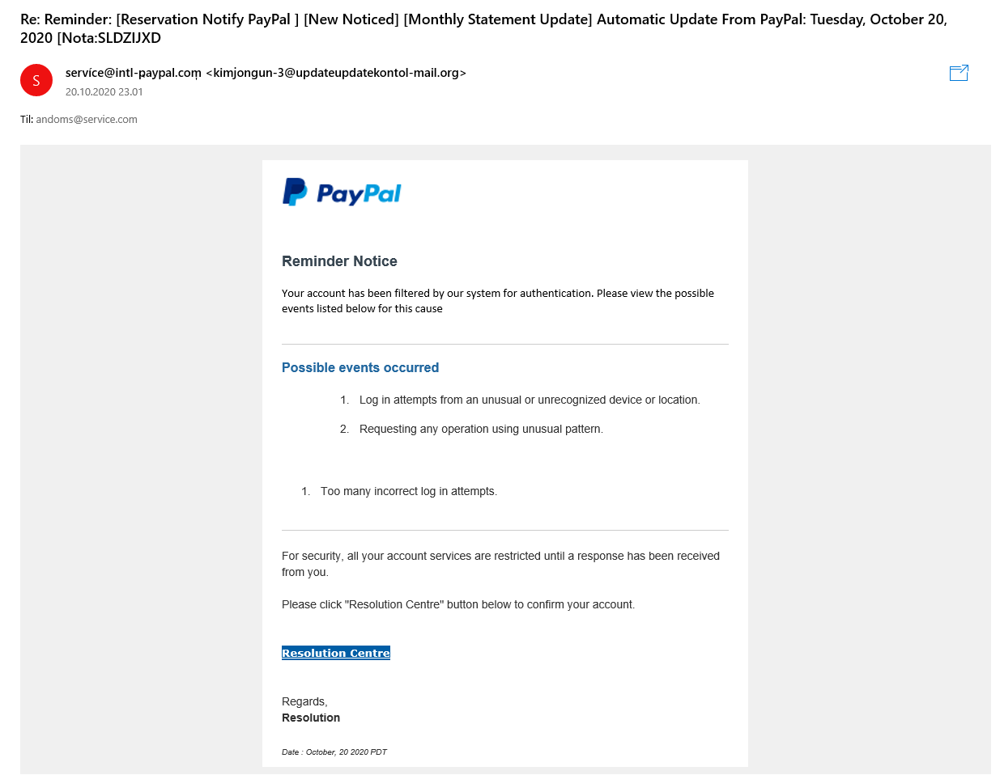
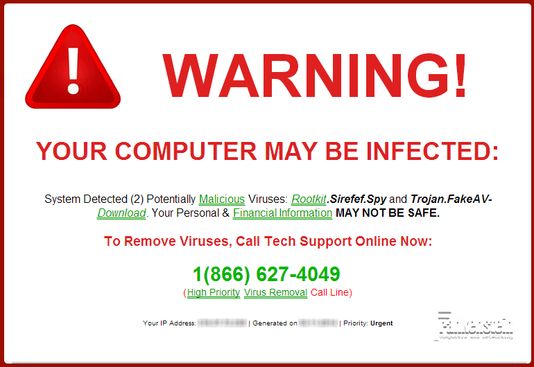
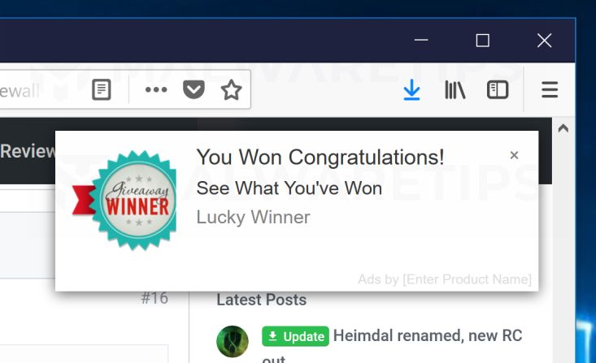
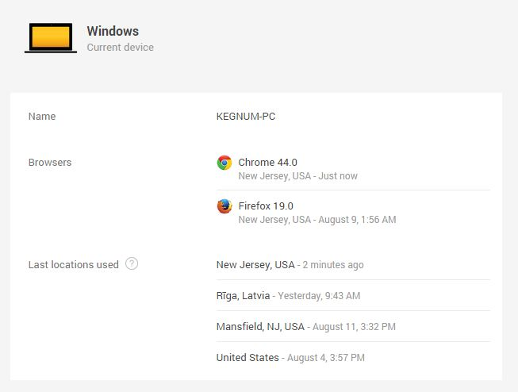

Hva er sosial manipulering?
Falsk e-post
En av de mest vanlige metodene man kan beskytte seg mot når det kommer til sosial manipulering, er phishing i form av falske emailer. E-post filtre er ikke feilfrie og mange falske emailer kommer gjennom slike filtre. Dersom du får en email fra en ukjent kilde, eller om noe som ikke du er kjent med, så er det måter du kan sjekke om emailen er falsk og prøver å “phishe” etter din informasjon.
- Sjekk avsenderens email-adresse. Ofte vil disse være lange og utolkelige.
- Se etter skrivefeil. Les gjennom mailen og se om det er skrivefeil eller noe som kan ligne på at det er skrevet om gjennom en oversetter.
- Aldri trykk på knapper hvor det står “confirm your account” eller lignende, så lenge du ikke har bedt om en slik mail fra kilden.
- Se på bilder og logoer i mailen. Er de feilplasserte eller bare ikke der.
- Om du trykker på linker eller slikt i mailen, aldri skriv inn informasjonen din på disse nettsidene, de er laget for å stjele informasjonen din.
Pop-ups/Virusmeldinger
Ofte så surfer ansatte på nettet på jobbens pc, eller nettverk. Dette må man være forsiktig med. Plutselig dukker det opp varsler om at det er oppdaget virus på pc´en. Enten er det antiviruset som er lastet ned på pc´en som sier ifra eller så er det er det falskt. Måter du kan unngå å falle for slike meldinger er å ha sikkerhetsprinsipper for deg selv.
- Vær kjent med ditt eget antivirus. Hvordan ser programmet ut? Hvordan fungerer det? Om du vet dette er det mye lettere for deg å vite om en melding er falsk eller ikke.
- Ikke trykk på noe som du ikke er sikker på. Dette gjelder hvertfall når du er på jobb pc, men det er en god verdi å ha når du surfer på nettet.
Fristelser på nett
Det er lett å bli fristet på nettet, hvis det plutselig dukker opp et varsel om at du har vunnet noe eller vunnet penger. Da er det lett å bli fristet til å trykke på linken. Ofte er dette falskt, og da må man være ekstra forsiktig med å trykke seg videre. Disse meldingene om at du har vunnet penger web å surfe på nettet er alltid falske. Man vinner IKKE penger av å surfe på nettet. Disse meldingene er ofte fylt med malware, som vil stjele informasjonen din og gjøre stor skade dersom man laster det ned. Ved å trykke på slike meldinger og følge instruksene kan du lett påføre store skader på både pcen din og innformasjonen den inneholder.
Bedriftssikkerhet
- Bedriftssikkerhet er viktig fordi bedrifter holder mye personlig og sensitiv informasjon. Du som ansatt har tilgang til denne informasjonen og bør derfor holde deg trygg slik at bedriften er trygg.
Dersom du blir utsatt for cyberangrep

I noen tilfeller vet ikke en at de er hacket før det er for sent. Facebooken deres kan
være hacket eller en annen platform. Det er derfor ekstremt viktig å se etter tegn som
tilsier om man er hacket eller ikke slik at man alltid har kontroll over pc´en sin. Og
skulle man være usikker, så gå til IT-ansvarlig ved bedriften. Cyberangrep blir bare
større og større, og det blir bare fler av dem. Så sikkerheten må hele tiden forbedres.
Det finnes mange måter å sjekke om du er blitt utsatt for cyberangrep og informasjonen
din har havnet på avveie. En måte er å sjekke din innloggingshistorikk. Mange tjenester
(f.eks. Google, Youtube) tilbyr måter å sjekke din innloggingshistorikk. Dette lar deg
se alle innlogginger og forsøkte innlogginger på brukerne du sjekker. Dersom du har blitt
utsatt for et angrep eller innformasjonen din har blitt stjålet og brukt, kan du se om
noen har logget inn på din bruker og iverksette tiltak derfra.
For å unngå at dette skjer ofte, er det anbefalt å bruke mange forskjellige passord på
hver tjeneste du bruker. For å gjøre dette lett kan du bruke en passord-manager (f.eks.
Lastpass, Dashlane, Keeper PW Manager). Dette gjør det lett å ha vanskelige passord, uten
at du trenger å huske alle sammen.